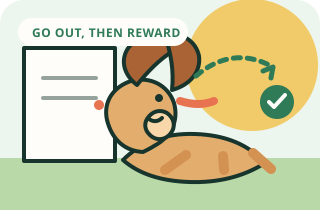

Puppy routines
Potty training without punishment
Prevent accidents with supervision and timing, then reward the location you want your dog to use.
Goal
What success looks like
Your puppy or dog uses the chosen outdoor or indoor potty spot consistently.
Visual method
See the sequence before you practice
Prevent accidents with supervision, take the dog to the same spot, and reward immediately after the dog finishes there.

Complete method
One session, start to finish
- 01
Set up
Choose one quiet potty area and use it consistently.
- 02
Warm up
Repeat one skill your dog already knows for 30 to 60 seconds.
- 03
Teach
Take your dog to the same spot at frequent intervals. Young puppies need many opportunities, and bladder control varies by individual.
- 04
Reward
Mark the exact behavior, then deliver the reward within one second.
- 05
Repeat
Do three to five easy repetitions. If two cues are missed, make the task easier.
- 06
Advance
Your dog uses the chosen spot with fewer accidents over several days, even when your family follows a realistic schedule.
- 07
Finish
Use your release cue, reward one easy win, and end while your dog is still engaged.
Before you begin
Set up for an easy win
- Choose one quiet potty area and use it consistently.
- Keep the puppy on a leash or close supervision indoors.
- Use an enzymatic cleaner for accidents; ordinary cleaners may leave scent cues.
- Take your dog out after waking, eating, drinking, playing, and before sleep.
Step by step
How to teach it
- 01
Set a predictable schedule
Take your dog to the same spot at frequent intervals. Young puppies need many opportunities, and bladder control varies by individual.
- 02
Go with your dog
Stay calm and quiet rather than sending the dog outside alone. Give them a few minutes to sniff and choose the spot.
- 03
Reward immediately after
Mark and reward right after they finish in the right place. A reward delivered indoors is too late to explain the location.
- 04
Supervise closely indoors
Use a leash, baby gate, or direct attention so you can interrupt with a cheerful invitation to go outside before an accident happens.
- 05
Handle accidents neutrally
Clean the area without scolding. If accidents repeat in the same place, add supervision, increase trips, or change the setup.
- 06
Track the pattern
Note when accidents happen for three to five days. A pattern helps you add a trip before the usual time.
Success checkpoint
You are ready to add difficulty when…
Your dog uses the chosen spot with fewer accidents over several days, even when your family follows a realistic schedule.
When progress stalls
Common problems and fixes
My puppy goes outside and then potties inside.
Stay outside longer, add a short walk or sniff break, and supervise immediately after coming in. Reward outside, not only when you return.
My dog hides to potty.
Hiding often follows past punishment or indicates discomfort with supervision. Stop scolding, increase calm supervision, and clean thoroughly.
My adult dog suddenly has accidents.
Sudden changes can have medical causes. Contact your veterinarian, especially with straining, increased drinking, or changes in appetite.
Trainer note
Punishment may stop the dog from pottying in front of you, but it does not teach where to go. Prevention and reward are faster and kinder.